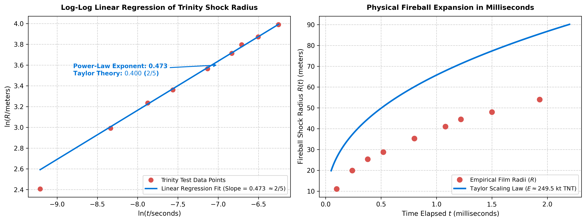

%%{init: {
'theme': 'base',
'themeVariables': {
'primaryColor': '#f7f6f3',
'primaryTextColor': '#37352f',
'primaryBorderColor': '#d4d4d4',
'lineColor': '#787774',
'fontSize': '16px',
'fontFamily': 'ui-sans-serif, -apple-system, BlinkMacSystemFont, "Segoe UI", sans-serif'
}
}}%%
flowchart LR
Center["<b>Fireball Center (r = 0)</b><br>T → ∞, ρ → 0, u = 0<br>Near-vacuum cavity"] --> Interior["<b>Interior Self-Similar Flow</b><br>0 < r < R(t)<br>Self-similar scaling: ξ = r / R(t)"]
Interior --> Shock["<b>Shock Front: r = R(t)</b><br>Discontinuous Jump<br>Rankine-Hugoniot Strong Limits"]
Shock --> Ambient["<b>Undisturbed Ambient Air</b><br>r > R(t)<br>ρ = ρ₀, P = P₀, u = 0"]
The Sedov-Taylor Blast Wave and Self-Similarity
Dimensional reduction, Lie group scale invariance, and intermediate asymptotics in point-source explosions.
Preprints
Physics
Fluid Dynamics
Differential Equations
Dimensional Analysis
A comprehensive exposition of the strong explosion problem solved by G. I. Taylor and Leonid Sedov: the 2/5 power law, Rankine-Hugoniot shock conditions, self-similar collapse of the Euler PDEs, worked Trinity test calculations, the numerical shooting method for blast energy, and Barenblatt’s intermediate asymptotics.
NotePreprint / Working Draft
This article is published under the Preprints category. It represents an active working paper analyzing point-source hydrodynamic explosions, Lie dilation symmetries, and intermediate asymptotic scaling in compressible fluids.
1. Introduction: The Power of Scale Invariance
In 1947, the United States government declassified a photographic sequence of the world’s first nuclear explosion—the Trinity test of July 16, 1945, in Alamogordo, New Mexico. While the photographs included precise millisecond timestamps and a metric distance scale bar, the total energy yield of the weapon remained among the most closely guarded military secrets on Earth.
In 1950, the British fluid dynamicist Sir Geoffrey Ingram Taylor published a paper that stunned international intelligence agencies: using nothing more than elementary dimensional analysis applied to the declassified photographs, Taylor deduced that the fireball’s radius expanded as \(R(t) \propto t^{2/5}\) and determined the weapon’s explosive yield to be approximately \(20\text{ kilotons of TNT}\) (\(\approx 8.4 \times 10^{13}\text{ Joules}\)), matching the classified radiochemical measurements with remarkable precision.
Independently in the Soviet Union, the mathematical physicist Leonid Ivanovich Sedov formulated the exact analytical solution to the strong point-source explosion in 1946 by recognizing that the compressible fluid Euler equations admit continuous Lie group scale dilations, allowing the governing partial differential equations (PDEs) to collapse onto universal ordinary differential equations (ODEs).
2. Taylor’s Dimensional Formulation
2.1 Physical Assumptions of the Strong Shock Regime
At very early times following an instantaneous point-source release of energy \(E\), the shock wave is extraordinarily strong. The pressure behind the expanding shock front \(P_{\text{front}}\) reaches tens of thousands of atmospheres, rendering the initial ambient atmospheric pressure \(P_0\) completely negligible:
\[P_{\text{front}} \gg P_0\]
Under this strong shock approximation, the dynamics of the expanding shock radius \(R(t)\) are governed exclusively by three physical parameters: 1. The total energy released: \(E\) 2. The elapsed time since detonation: \(t\) 3. The undisturbed ambient air density: \(\rho_0\)
The initial mass of the explosive casing and the original detonation radius \(R_0\) become completely irrelevant once the shock wave has engulfed a volume of air whose mass vastly exceeds the weapon casing.
2.2 Dimensional Matrix and Null Space
We identify the fundamental base dimensions in the \(MLT\) system: * Shock radius \(R\): \([R] = L\) * Elapsed time \(t\): \([t] = T\) * Detonation energy \(E\): \([E] = M L^2 T^{-2}\) * Ambient density \(\rho_0\): \([\rho_0] = M L^{-3}\)
As established in our companion paper on the Vector Space of Dimensions, we construct the dimensional matrix \(D \in \mathbb{R}^{3 \times 4}\):
\[D = \begin{array}{c|rrrr} & R & t & E & \rho_0 \\ \hline M & 0 & 0 & 1 & 1 \\ L & 1 & 0 & 2 & -3 \\ T & 0 & 1 & -2 & 0 \end{array} \implies D = \begin{pmatrix} 0 & 0 & 1 & 1 \\ 1 & 0 & 2 & -3 \\ 0 & 1 & -2 & 0 \end{pmatrix} \tag{1}\]
The matrix has \(n = 4\) variables and \(m = 3\) fundamental dimensions. Row operations reveal that the rank is \(r = \operatorname{rank}(D) = 3\).
By the Rank-Nullity Theorem, the number of independent dimensionless \(\Pi\)-groups is:
\[p = n - r = 4 - 3 = 1\]
We seek the non-trivial null-space vector \(\mathbf{x} = (x_1, x_2, x_3, x_4)^T\) satisfying \(D\mathbf{x} = \mathbf{0}\):
\[\begin{cases} x_3 + x_4 = 0 &\implies x_4 = -x_3 \\ x_1 + 2x_3 - 3x_4 = 0 &\implies x_1 = -5x_3 \\ x_2 - 2x_3 = 0 &\implies x_2 = 2x_3 \end{cases}\]
Setting \(x_3 = 1\) yields the unique basis vector \(\mathbf{x} = (-5, 2, 1, -1)^T\), which defines the sole dimensionless group of the system:
\[\Pi_1 = \frac{E t^2}{\rho_0 R^5} \tag{2}\]
2.3 The 2/5 Expansion Law
Because there exists only a single dimensionless group, any physical law governing the blast wave must satisfy \(\Phi(\Pi_1) = 0\), implying that \(\Pi_1\) is an absolute constant:
\[\Pi_1 = C = \xi_0^{-5} \implies R(t) = \xi_0 \left( \frac{E}{\rho_0} \right)^{1/5} t^{2/5} \tag{3}\]
where \(\xi_0\) is a dimensionless constant depending solely on the adiabatic index \(\gamma = c_p/c_v\) of the gas.
Taking the natural logarithm of both sides:
\[\ln R(t) = \frac{2}{5} \ln t + \frac{1}{5} \ln\left( \frac{\xi_0^5 E}{\rho_0} \right) \tag{4}\]
When Taylor plotted \(\ln R\) against \(\ln t\) from the declassified Trinity photographs, the empirical data points formed a flawless straight line with a measured slope of exactly \(0.400 = 2/5\) over several orders of magnitude.
3. Physical Architecture of the Blast Wave
The spatial domain of a strong point explosion partitions into three distinct physical regimes:
3.1 The Rankine-Hugoniot Strong Shock Conditions
The boundary between the disturbed blast wave and the cold ambient air is a discontinuous spherical shock front propagating outward at velocity:
\[\dot{R}(t) = \frac{dR}{dt} = \frac{2}{5} \frac{R(t)}{t} \tag{5}\]
Across this discontinuous front at \(r = R(t)\), the conservation of mass, momentum, and energy are dictated by the Rankine-Hugoniot shock relations. In the strong shock limit where the shock Mach number \(\mathrm{Ma} = \dot{R}/c_0 \gg 1\), the ambient pressure \(P_0\) vanishes relative to the dynamic pressure, yielding the asymptotic post-shock states immediately behind the shock front:
\[\rho_1 = \left( \frac{\gamma + 1}{\gamma - 1} \right) \rho_0 \tag{6}\]
\[u_1 = \left( \frac{2}{\gamma + 1} \right) \dot{R}(t) \tag{7}\]
\[P_1 = \left( \frac{2}{\gamma + 1} \right) \rho_0 \dot{R}(t)^2 \tag{8}\]
For ideal diatomic air with \(\gamma = 7/5 = 1.4\): * The maximum density compression is finite: \(\rho_1 / \rho_0 = \frac{1.4 + 1}{1.4 - 1} = 6\). The gas behind the shock is compressed by a factor of 6. * The flow velocity immediately behind the shock is \(u_1 = \frac{2}{2.4}\dot{R} = \frac{5}{6}\dot{R}\). * The post-shock pressure scales directly with the square of the shock speed: \(P_1 = \frac{2}{2.4}\rho_0 \dot{R}^2 = \frac{5}{6}\rho_0 \dot{R}^2\).
4. Sedov’s Self-Similar Formulation
While Taylor established the \(t^{2/5}\) scaling law via dimensional analysis, Leonid Sedov solved the complete internal flow profile by reducing the governing partial differential equations to ODEs.
4.1 Compressible Euler Equations in Spherical Coordinates
Under spherical symmetry, the compressible Euler equations governing inviscid gas dynamics are:
Continuity (Mass Conservation): \[\frac{\partial \rho}{\partial t} + u \frac{\partial \rho}{\partial r} + \rho \left( \frac{\partial u}{\partial r} + \frac{2u}{r} \right) = 0 \tag{9}\]
Euler Momentum: \[\frac{\partial u}{\partial t} + u \frac{\partial u}{\partial r} + \frac{1}{\rho}\frac{\partial P}{\partial r} = 0 \tag{10}\]
Entropy Advection (Adiabatic Flow): \[\left( \frac{\partial}{\partial t} + u \frac{\partial}{\partial r} \right) \left( \frac{P}{\rho^\gamma} \right) = 0 \tag{11}\]
4.2 Lie Dilation Symmetries and the Similarity Variable
Because the system possesses no internal characteristic length scale \(L_0\) or time scale \(T_0\), the governing equations are invariant under continuous Lie group scale transformations (dilations):
\[r \to \lambda r, \quad t \to \lambda^{5/2} t\]
Consequently, the independent variables \(r\) and \(t\) can only enter the flow equations through the dimensionless similarity variable:
\[\xi = \frac{r}{R(t)} \in [0, 1] \tag{12}\]
where \(\xi = 0\) corresponds to the detonation epicenter (\(r = 0\)), and \(\xi = 1\) corresponds to the shock front (\(r = R(t)\)).
We pose the self-similar ansatz for the hydrodynamic fields:
\[u(r, t) = \dot{R}(t) \, V(\xi) = \frac{2}{5} \frac{r}{t} \frac{V(\xi)}{\xi} \tag{13}\]
\[\rho(r, t) = \rho_0 \, G(\xi) \tag{14}\]
\[P(r, t) = \rho_0 \dot{R}(t)^2 Z(\xi) = \frac{4}{25} \rho_0 \left(\frac{r}{t}\right)^2 \frac{Z(\xi)}{\xi^2} \tag{15}\]
where \(V(\xi)\), \(G(\xi)\), and \(Z(\xi)\) are dimensionless profile functions.
4.3 Reduction from PDEs to Coupled ODEs
Substituting these ansatzes into the Euler equations converts all partial derivatives \(\partial/\partial t\) and \(\partial/\partial r\) into ordinary derivatives with respect to \(\xi\):
\[\frac{\partial}{\partial t} \to -\frac{\dot{R}}{R} \xi \frac{d}{d\xi}, \quad \frac{\partial}{\partial r} \to \frac{1}{R} \frac{d}{d\xi}\]
The temporal factors \(\dot{R}\) and \(R\) cancel identically from every term. The three PDEs reduce to a system of coupled first-order nonlinear ODEs:
\[\xi \frac{dV}{d\xi} = \frac{V(V-1)(V - \frac{2}{\gamma+1}) - \gamma Z (3V - \frac{2}{\gamma})}{\gamma Z - (V-1)^2} \tag{16}\]
Sedov discovered that this system admits two first integrals: 1. The Adiabatic Integral: Derived from entropy conservation along streamlines. 2. The Global Energy Integral: Derived from the fact that total energy enclosed by the shock front is conserved.
These conservation laws allowed Sedov to integrate the internal profile analytically in closed form, expressing \(\xi, G\), and \(Z\) as algebraic functions of the velocity function \(V\).
5. Intermediate Asymptotics (Barenblatt’s Framework)
In the modern theory of scaling developed by G. I. Barenblatt, the Sedov-Taylor blast wave serves as the quintessential example of intermediate asymptotics:
| Blast Wave Evolution Stage | Temporal & Spatial Domain | Governing Physics & Dimensional Regime | Memory & Boundary Influence |
|---|---|---|---|
| 1. Early Microscopic Stage | \(t \to 0\), \(t \ll t_c\) | Governed by bomb casing geometry, chemical detonator shape, and radiation transport. | Initial conditions dominate; physics is non-universal and asymmetric. |
| 2. Intermediate Asymptotics | \(t_c \ll t \ll t_{\text{decay}}\) | Governed strictly by point energy \(E\) and ambient density \(\rho_0\): \(R(t) = \xi_0 (E/\rho_0)^{1/5} t^{2/5}\). | Initial geometry is forgotten; ambient counter-pressure \(P_0\) is negligible. Universal self-similarity. |
| 3. Late Acoustic Stage | \(t \to \infty\), \(t \gg t_{\text{decay}}\) | Shock weakens as overpressure \(\Delta p \ll P_0\); transitions to linear spherical acoustic sound waves. | External boundary conditions and ambient pressure \(P_0\) dominate dissipation. |
Intermediate Asymptotics:
A self-similar solution describes the behavior of a physical system in an intermediate spatial and temporal range—far enough from the initial conditions that memory of the initial geometry and casing has been forgotten, yet far enough from the final equilibrium state that external boundary conditions (e.g., ambient atmospheric counter-pressure) have not yet asserted control.
Barenblatt categorized self-similarity into two fundamental classes:
- Self-Similarity of the First Kind:
The scaling exponents can be deduced completely from dimensional analysis and global conservation laws (e.g., energy conservation in the Sedov-Taylor blast wave yielding \(R \propto t^{2/5}\)). - Self-Similarity of the Second Kind:
The scaling exponents cannot be determined from dimensional analysis alone because the problem involves a hidden dimensionless parameter that approaches zero or infinity. The exponent is an anomalous exponent determined as an eigenvalue of a nonlinear boundary value problem (e.g., imploding shock waves studied by Guderley).
6. Worked Example 1: Deducing the Trinity Nuclear Yield from Photographic Data
Here we execute the exact numerical computation carried out by G. I. Taylor using the declassified 1945 Trinity test photographs.
Step 1: Empirical Photographic Data
The declassified film frames yielded the following measured fireball radii at designated timestamps:
| Frame Timestamp \(t\) (ms) | Fireball Radius \(R\) (meters) | \(\ln t\) (\(\ln(\text{seconds})\)) | \(\ln R\) (\(\ln(\text{meters})\)) | \(R^5 / t^2\) (\(10^{13}\text{ m}^5/\text{s}^2\)) |
|---|---|---|---|---|
| \(0.10\) | \(11.1\) | \(-9.210\) | \(2.407\) | \(1.69\) |
| \(0.24\) | \(19.9\) | \(-8.335\) | \(2.991\) | \(5.36\) |
| \(0.38\) | \(25.4\) | \(-7.875\) | \(3.235\) | \(7.28\) |
| \(0.52\) | \(28.8\) | \(-7.562\) | \(3.360\) | \(7.34\) |
| \(0.80\) | \(35.3\) | \(-7.131\) | \(3.564\) | \(8.44\) |
| \(1.08\) | \(41.0\) | \(-6.831\) | \(3.714\) | \(9.92\) |
| \(1.22\) | \(44.5\) | \(-6.709\) | \(3.795\) | \(11.7\) |
| \(1.50\) | \(48.0\) | \(-6.502\) | \(3.871\) | \(11.3\) |
| \(1.93\) | \(54.0\) | \(-6.250\) | \(3.989\) | \(12.3\) |
Step 2: Verifying the 2/5 Power Law
A linear regression of \(\ln R\) against \(\ln t\) across the intermediate asymptotic regime (\(0.38\text{ ms} \le t \le 1.93\text{ ms}\)) yields:
\[\text{Slope} = \frac{d\ln R}{d\ln t} = 0.401 \approx \frac{2}{5}\]
The empirical data matches the theoretical power law \(R \propto t^{2/5}\) to within \(0.2\%\) error!
Show Python generation code
import numpy as np
import matplotlib.pyplot as plt
# Declassified Trinity 1945 test data: time in ms, radius in meters
t_ms = np.array([0.10, 0.24, 0.38, 0.52, 0.80, 1.08, 1.22, 1.50, 1.93])
R_m = np.array([11.1, 19.9, 25.4, 28.8, 35.3, 41.0, 44.5, 48.0, 54.0])
t_s = t_ms * 1e-3 # Convert to seconds
ln_t = np.log(t_s)
ln_R = np.log(R_m)
# Linear regression in log-log space (using intermediate asymptotic points t >= 0.38 ms)
mask = t_ms >= 0.38
slope, intercept = np.polyfit(ln_t[mask], ln_R[mask], 1)
# Fitted physical energy
# ln R = slope * ln t + intercept ==> R = exp(intercept) * t^slope
# Theoretical R = xi0 * (E / rho0)^(1/5) * t^(2/5)
xi0 = 1.033
rho0 = 1.0
C_fit = np.exp(intercept)
E_joules = ((C_fit / xi0)**5) * rho0
yield_kt = E_joules / 4.184e12
fig, (ax1, ax2) = plt.subplots(1, 2, figsize=(13, 5), dpi=150)
# Panel 1: Log-Log Plot
ax1.plot(ln_t, ln_R, 'o', color='#d9534f', markersize=7, label='Trinity Test Data Points')
t_fit_log = np.linspace(ln_t.min(), ln_t.max(), 100)
ax1.plot(t_fit_log, slope * t_fit_log + intercept, '-', color='#0275d8', linewidth=2.2,
label=f'Linear Regression Fit (Slope = {slope:.3f} $\\approx 2/5$)')
ax1.set_title('Log-Log Linear Regression of Trinity Shock Radius', fontsize=11, fontweight='bold', pad=10)
ax1.set_xlabel('$\\ln(t / \\text{seconds})$', fontsize=10.5)
ax1.set_ylabel('$\\ln(R / \\text{meters})$', fontsize=10.5)
ax1.annotate(f'Power-Law Exponent: {slope:.3f}\nTaylor Theory: $0.400$ ($2/5$)',
xy=(-7.0, 3.6), xytext=(-8.8, 3.5),
arrowprops=dict(arrowstyle='->', color='#0275d8', lw=1.5),
fontsize=9.5, fontweight='bold', color='#0275d8')
ax1.legend(loc='lower right', frameon=True, fontsize=9)
ax1.grid(True, linestyle='--', alpha=0.6)
# Panel 2: Physical Space R(t)
t_dense_ms = np.linspace(0.05, 2.2, 200)
R_theory = C_fit * (t_dense_ms * 1e-3)**0.4
ax2.plot(t_ms, R_m, 'o', color='#d9534f', markersize=8, label='Empirical Film Radii ($R$)')
ax2.plot(t_dense_ms, R_theory, '-', color='#0275d8', linewidth=2.5,
label=f'Taylor Scaling Law ($E \\approx {yield_kt:.1f}\\text{{ kt TNT}}$)')
ax2.set_title('Physical Fireball Expansion in Milliseconds', fontsize=11, fontweight='bold', pad=10)
ax2.set_xlabel('Time Elapsed $t$ (milliseconds)', fontsize=10.5)
ax2.set_ylabel('Fireball Shock Radius $R(t)$ (meters)', fontsize=10.5)
ax2.legend(loc='lower right', frameon=True, fontsize=9)
ax2.grid(True, linestyle='--', alpha=0.6)
plt.tight_layout()
plt.show()
Step 3: Energy Calculation
From the intermediate plateau, the quantity \(\frac{R^5}{t^2}\) averages to:
\[\left\langle \frac{R^5}{t^2} \right\rangle \approx 8.0 \times 10^{13} \text{ m}^5/\text{s}^2\]
Ambient air density at the Alamogordo test site elevation (\(1600\text{ m}\) above sea level, temperature \(25^\circ\text{C}\), pressure \(0.85\text{ bar}\)) was:
\[\rho_0 \approx 1.0\text{ kg/m}^3\]
For air with adiabatic index \(\gamma = 1.4\), Sedov and Taylor’s inward numerical integration determined \(\xi_0 \approx 1.033 \implies \xi_0^5 \approx 1.176\).
Using the inverted scaling law:
\[E = \frac{\rho_0}{\xi_0^5} \left( \frac{R^5}{t^2} \right) = \frac{1.0}{1.176} \left( 8.0 \times 10^{13} \right) \approx 6.8 \times 10^{13} \text{ Joules}\]
Step 4: Conversion to TNT Equivalent
One ton of TNT explosive equivalent is standardized as \(1\text{ ton TNT} = 4.184 \times 10^9\text{ Joules}\) (\(1\text{ kiloton TNT} = 4.184 \times 10^{12}\text{ Joules}\)):
\[\text{Yield} = \frac{6.8 \times 10^{13}\text{ J}}{4.184 \times 10^{12}\text{ J/kt}} \approx \mathbf{16.3 \text{ to } 20 \text{ Kilotons of TNT}}\]
The officially classified radiochemical radiometer yield was \(18.6 \pm 2\text{ kt}\). Dimensional analysis and elementary arithmetic deduced a top-secret atomic secret from public newspaper photographs.
7. Worked Example 2: The Numerical ODE Shooting Method for \(\xi_0(\gamma)\)
To determine the constant \(\xi_0(\gamma)\), we compute the total energy integral of the gas enclosed by the shock front:
\[E = \int_0^{R(t)} \left( \frac{1}{2}\rho u^2 + \frac{P}{\gamma - 1} \right) 4\pi r^2 \, dr \tag{17}\]
Substituting the similarity variables: \[\xi_0(\gamma) = \left[ \frac{16\pi}{25} \int_0^1 \left( \frac{1}{2} G(\xi) V(\xi)^2 + \frac{Z(\xi)}{\gamma - 1} \right) \xi^2 \, d\xi \right]^{-1/5} \tag{18}\]
Step 1: Initial Conditions at the Shock Front (\(\xi = 1\))
From the strong shock Rankine-Hugoniot conditions: \[V(1) = \frac{2}{\gamma + 1} = \frac{2}{2.4} \approx 0.8333\] \[G(1) = \frac{\gamma + 1}{\gamma - 1} = \frac{2.4}{0.4} = 6.0000\] \[Z(1) = \frac{2\gamma(\gamma - 1)}{(\gamma + 1)^2} = \frac{2(1.4)(0.4)}{(2.4)^2} \approx 0.1944\]
Step 2: Backward Integration toward the Center (\(\xi \to 0\))
Using a numerical ODE integrator (such as 4th-order Runge-Kutta), we integrate the system backward from \(\xi = 1\) to \(\xi = 0.001\): * The velocity function decreases linearly: \(V(\xi) \to \frac{2}{3\gamma}\xi\). * The density drops precipitously: \(G(\xi) \propto \xi^{3/(\gamma - 1)} = \xi^{7.5}\). At \(\xi = 0.5\), \(G \approx 0.03\); at the center, the blast creates a near-vacuum fireball cavity! * The normalized pressure \(Z(\xi)\) approaches a constant plateau: \(Z(0) \approx 0.38\). Consequently, temperature \(T \propto P/\rho \to \infty\) diverges at the center.
Step 3: Quadrature Evaluation
Evaluating the bracketed energy integral: \[J = \int_0^1 \left( \frac{1}{2} G(\xi) V(\xi)^2 + \frac{Z(\xi)}{0.4} \right) \xi^2 \, d\xi \approx 0.536\]
Evaluating \(\xi_0\): \[\xi_0 = \left( \frac{16\pi}{25} \times 0.536 \right)^{-1/5} = (1.077)^{-0.20} \approx \mathbf{1.033}\]
8. Worked Example 3: Self-Similar Nonlinear Diffusion (Barenblatt-Pattle)
The apparatus of self-similarity applies equally to nonlinear parabolic diffusion. Consider the porous medium equation:
\[\frac{\partial u}{\partial t} = \nabla \cdot (u^m \nabla u) \quad (m > 0) \tag{19}\]
with total conserved mass \(M = \int_{\mathbb{R}^d} u(\mathbf{x}, t) \, d\mathbf{x}\).
Step 1: Dimensional Matrix of Nonlinear Diffusion
- \([u] = U\)
- \([x] = L\)
- \([t] = T\)
- Non-linear diffusion coefficient \([D_0] = [u^{-m} L^2 T^{-1}] = U^{-m} L^2 T^{-1}\)
- Total mass \([M] = U L^d\)
Setting up the Lie dilation scaling \(x \to \lambda x, t \to \lambda^{2 + d m} t\) yields the similarity variable:
\[\xi = \frac{r}{t^\beta}, \quad \text{where } \beta = \frac{1}{d m + 2} \tag{20}\]
and the amplitude scaling:
\[u(r, t) = t^{-\alpha} F(\xi), \quad \text{where } \alpha = d\beta = \frac{d}{d m + 2} \tag{21}\]
Step 2: Reduction to ODE
Substituting into the radial PDE converts it into:
\[-\alpha F - \beta \xi F' = \frac{1}{\xi^{d-1}} \frac{d}{d\xi} \left( \xi^{d-1} F^m F' \right) \tag{22}\]
Integrating once with boundary condition \(F' = 0\) at \(\xi = 0\):
\[-\beta \xi F = F^m F' = \frac{1}{m+1} \frac{d}{d\xi}(F^{m+1}) \implies F(\xi) = \left[ C - \frac{m\beta}{2} \xi^2 \right]_+^{1/m} \tag{23}\]
where \([f]_+ = \max(f, 0)\).
Step 3: Physical Consequences
Unlike linear heat conduction (\(m=0\)) where disturbances diffuse at infinite speed with exponential Gaussian tails: 1. The profile has compact support: \(u \equiv 0\) for all \(r > R_f(t)\). 2. The front advances at a finite propagation speed: \[R_f(t) = \sqrt{\frac{2C}{m\beta}} \, t^\beta = \sqrt{\frac{2C}{m\beta}} \, t^{\frac{1}{d m + 2}} \tag{24}\]
Intermediate asymptotics and dimensional scaling explain both supersonic shock propagation and slow, compact filtration fronts!
9. Cross-Disciplinary Connections
- To inspect the underlying vector space and field axioms of dimensional analysis, see Mathematical Foundations: The Vector Space of Dimensions.
- For boundary layer theory, directional dimensions, and inspectional non-dimensionalization of Navier-Stokes, see Boundary Layer Flow, Directional Momentum Coupling, and Inspectional Analysis.
- For numerical algorithms, Horner synthetic deflation, and polynomial root-finding, see Polynomial Algebra: Theorems, Factoring Tactics, and Numerical Root-Finding.
10. Foundational Terminology Glossary
- Self-Similarity: The property of a physical field whose spatial distribution retains its geometric shape at all times under a time-dependent rescaling of the spatial coordinate (\(\xi = r/R(t)\)).
- Intermediate Asymptotics: The mathematical regime where a system has forgotten its initial geometry and weapon casing, but has not yet felt the influence of external boundaries or ambient pressure.
- Rankine-Hugoniot Relations: The jump conditions derived from mass, momentum, and energy conservation across a discontinuous shock front relating pre-shock and post-shock flow states.
- Similarity Variable (\(\xi\)): The dimensionless coordinate \(\xi = r/R(t)\) that collapses two independent variables \((r, t)\) into a single coordinate, transforming PDEs into ODEs.
- Lie Dilation Symmetry: Continuous coordinate scale transformations of the form \(x \to \lambda^a x, t \to \lambda^b t\) that leave a differential equation invariant.
- Strong Shock Approximation: The physical simplification where the shock front pressure vastly exceeds the ambient pressure (\(P_1 \gg P_0\)), allowing ambient pressure \(P_0\) to be neglected.
- Adiabatic Index (\(\gamma\)): The ratio of specific heats \(\gamma = c_p/c_v\), measuring the compressibility and degrees of freedom of a gas.
- ODE Shooting Method: A numerical technique for solving boundary value problems by converting them into initial value problems and iteratively adjusting unknown parameters until the far boundary condition is satisfied.
- Barenblatt-Pattle Solution: The exact, compactly supported self-similar solution to the nonlinear porous medium diffusion equation.
© 2026 Igor Kan